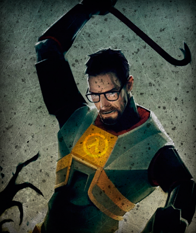

Gordon Freeman
Gordon Freeman es el protagonista principal de la saga Half-Life. Él es un físico teórico que se ve obligado a defenderse a sí mismo y a la raza humana contra alienígenas y otros enemigos tras un experimento fallido en los Laboratorios de Investigación de Black Mesa. Se convierte en un héroe de la resistencia, llegando a ser uno de los líderes de un levantamiento contra los Combine.
